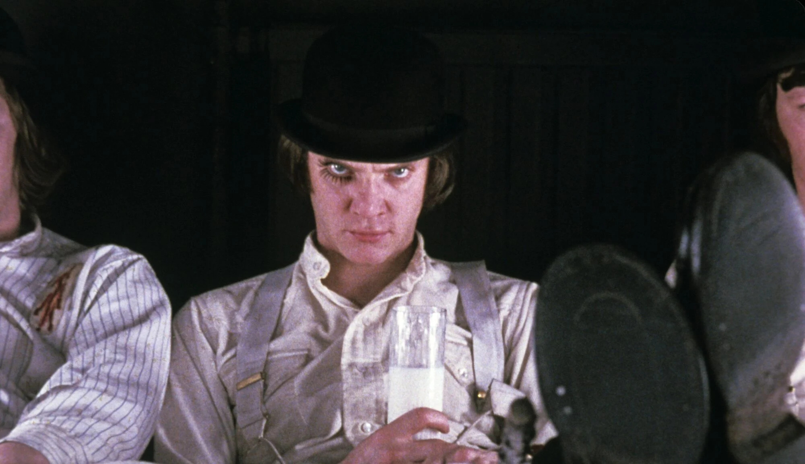

My name is Sergii Sopot and I was born in Ukraine. I came here at the age of 6 back in 2015, with my first city that I lived in being Cupertino. There was nothing to do there really, and I was very bored with every small thing I laid my eyes on. I traveled to Los Angeles a lot to visit Universal Studios, and I grew a love for reading. In 2019, we moved to San Diego where I attended Sycamore Ridge. Quarantine happened and I was pushed back into my apartment same as everyone else. It was boring but I found a love for the piano where I taught myself how to play. I still play to this day and credit quarantine for pushing me to learn my favorite instrument. I attended PTMS, nothing good came out of that school except a couple of friendships. Overall, I feel like I belong most in CCA, here with my friends. The classes, the teachers, especially Mr. Hare have continually pushed me into my love for learning and getting after my dreams. I hope to major in pre-Law or international relations when I go to college.

My favorite movies include: The Godfather I and II, A Clockwork Orange, Avatar Pulp Fiction just to name a few. All of these movies I watched with my family, primarily my dad. My father and I during the summer after quarantine, used to sit with me every night and watch movies with me. He felt that I was old enough to see some of these, and I felt like I was. I’d have to say Godfather II is my favorite movie as of right now, the story, the acting, and the shots themselves are so breathtaking. I watched A Clockwork Orange by myself, I was really into dystopian movies at this time, and I was really nagging my whole family about my love for Stanley Kubrick. I don’t think I should have watched those movies when I was so young. Pulp Fiction and Avatar I watched two years apart. I first watched Pulp Fiction with my dad and honestly left a big impact on me. The way the story was structured and how unexpected the plot became, all made it super memorable. I won’t get into Avatar, but you can imagine for yourself the visuals and how ahead of the time they were.
.jpg)
The music I’m into is a collection of a few different genres. I like Tame Impala, Lil Yachty, Pink Floyd, Cameron Winter, Geese, Bad Bunny, Queen, and Radiohead. I also just listen to randomly recommended tracks by spotify, which are usually neo-rock or post-rock songs. Some are in other languages, but mostly it’s music that reminds me of LSD and the Search for God, which my friend Arjun put me on. I like the dreamyness of Pink Floyd and the layers of music they provide, along with the simplistic but emotional power of Cameron Winter. Cameron is more new on the scene and I have only been listening to him and Geese for a couple months, but having listened to all his discography, he has quickly made the tops for my most listened to songs of the year. Queen and Radiohead, there is not a lot I cannot say about them both. There is not enough I cannot say about them. Thom Yorke’s beautiful voice and the instrumentals put me into this field of ascension. Bad Bunny I’ve picked up due to the recent craze over his music but I love it as well. Queen I started listening when I was in fourth grade and that gave me a lot, including my ability to play piano. I learned Bohemian Rhapsody as my first song on the piano, and from there, I sprung aristically.